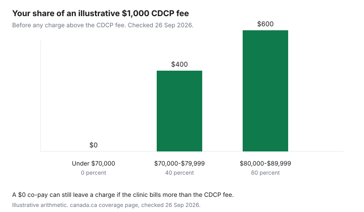

Healthcare · Canada
The Canadian Dental Care Plan in 2026–27: Who Qualifies, What the Co-Pay Tiers Mean, and How to Avoid a Coverage Gap
The Canadian Dental Care Plan is a federal plan with a co-pay, a provider who may charge more than the plan fee, and a renewal that already closed for this benefit period. It is not a card that makes every dental bill zero. The rules below are from canada.ca pages opened 26 Sep 2026, plus the renewal page's instruction to bill Sun Life. This is not dental advice. Confirm eligibility in your My Service Canada Account and confirm the fee with the clinic before you sit in the chair.
Key takeaways
- Applications for the 2026-2027 benefit period are open. The renewal page says coverage is a single benefit period ending each year on 30 June. The renewal period closed on 1 June 2026.
- You must have no access to private dental coverage, have filed a Canadian tax return (and your spouse must have filed), have adjusted family net income under $90,000, and be a Canadian resident for tax purposes.
- Of the CDCP fee, you pay 0 percent under $70,000, 40 percent from $70,000 to $79,999, and 60 percent from $80,000 to $89,999. A clinic can still charge more than the CDCP fee.
- A missed renewal means a new application and a gap. Care during the gap is not covered and is not paid later.
- A pension plan, a spouse's plan, or a health spending account that covers dental counts as access, with one dated exception for a retirement opt-out before 11 Dec 2023.
The 2026–27 benefit year (1 Jul 2026–30 Jun 2027) and what changed from last year
The plan overview, page details 22 Sep 2026, says applications for the 2026-2027 benefit period are open. If you had coverage for 2025-2026 and did not renew by the deadline, you can reapply, and you will have a gap. The renewal page, opened the same day, says the renewal period closed on 1 June 2026, and that the plan provides coverage over a single benefit period ending each year on 30 June. Renewals for the 2027-2028 benefit period will open in spring 2027. That sentence is on the page. It is a schedule, not a guess about who will be eligible then.
The pages that opened do not print the words "1 July 2026" as a start date. They name a 2026-2027 benefit period that ends on 30 June, after a 2025-2026 period. The heading uses 1 Jul 2026 because that is the day after a period that ends on 30 June. Treat the canada.ca wording as the source of truth if a clinic quotes a different year. A Sun Life provider newsletter and the Sun Life fee-grid page were not opened on this guide, so a 1 Apr 2026 fee-grid update is not stated here. Canada.ca does say CDCP fees are set apart from provincial association fee guides, and that the grids are published for providers on Sun Life. Ask the clinic which grid it is using.
What changed in practice for a household that was covered last period is the renewal itself. Your co-pay can change when you renew, because income changed. The renewal page says treatment is paid at the co-pay and the fees in effect when you receive the service, which can differ from an earlier estimate or preauthorization. There is no fee to apply or renew. The overview page warns that the plan does not ask you to pay to apply, and that messages asking for banking information are a scam pattern.
Eligibility in plain terms: adjusted family net income under $90,000, no access to private dental coverage, and taxes filed
The qualify page lists four requirements, and you need all of them. Adjusted family net income must be less than $90,000. You and your spouse or common-law partner, if you have one, must have filed a Canadian tax return for the previous year, and you must both be Canadian residents for tax purposes. You cannot have access to private dental insurance or coverage. That includes a health spending account that covers dental costs. The health spending account guide is the workplace election. If that account can pay a dental bill, the qualify page treats it as access.
Access is broader than "I used the plan." You are not eligible if coverage is through your work or pension, a family member's work or pension, a professional or student organization, or insurance you or a family member bought, including a top-up. The page says you are still treated as having access if you never used the plan, if you chose not to enrol, if you pay a premium for it, or if you opted out of pension dental after 11 Dec 2023. The stated exception is narrow: you may be eligible if you are retired and opted out of pension or retiree dental before 11 Dec 2023 and you cannot opt back in. The retiree bridge is where pension benefits are mapped. Do not guess the opt-out date. Read the pension booklet.
Check the tax slip before you tick the box. Box 45 on a T4, or box 015 on a T4A, is the employer's or pension's report of dental access. Code 1 means they reported no access. Codes 2, 3, 4, or 5 mean they reported some access for you and your family. If you apply and the slip shows access, you may have to prove you no longer have it. If the proof shows you do have access, the page says you can be removed and may have to reimburse services paid while you were ineligible. Check your spouse's slips too. If the code is wrong, fix it with the employer or the plan administrator before you apply.
Adjusted family net income, on the qualify page, starts with family net income on line 23600. Subtract universal child care benefit and registered disability savings plan income (lines 11700 and 12500). Add UCCB and RDSP amounts repaid (lines 21300 and 23200). Do that for both spouses. A provincial or federal social dental program is not the same as private coverage. The qualify page says you could still qualify, and that the plans may coordinate so benefits are not duplicated. Ontario's seniors dental program is the side-by-side guide.
Co-pay tiers explained: 0% under $70,000, 40% at $70,000–79,999, 60% at $80,000–89,999
The co-pay is your share of the CDCP established fee, not automatically your share of the clinic's bill. The coverage page, opened 26 Sep 2026, prints three rows. Lower than $70,000: the plan covers 100 percent of eligible services at the CDCP fees, and you cover 0 percent of those fees. You may still face additional charges. From $70,000 to $79,999: the plan covers 60 percent and you cover 40 percent of the CDCP fees, plus any additional charges. From $80,000 to $89,999: the plan covers 40 percent and you cover 60 percent of the CDCP fees, plus any additional charges. Income of $90,000 or more is outside the qualify test, so there is no co-pay tier to calculate.
On an illustrative $1,000 that equals the CDCP fee for a covered service, before anything the clinic charges above that fee, the arithmetic is $0, $400, or $600. That is 0 percent, 40 percent, and 60 percent of $1,000. It is not a quote. If the clinic charges $1,200 and the CDCP fee is $1,000, you can owe the $200 difference as well as your co-pay on the $1,000. The coverage page says you pay additional charges when the provider's cost is higher than what CDCP reimburses, or when you agree to services the plan does not cover. Agree the fee before treatment. The quote comparison is how to read procedure codes beside that fee.
| Adjusted family net income | CDCP pays of its fee | You pay of its fee | Your share of an illustrative $1,000 CDCP fee |
|---|---|---|---|
| Lower than $70,000 | 100 percent | 0 percent | $0 |
| $70,000 to $79,999 | 60 percent | 40 percent | $400 |
| $80,000 to $89,999 | 40 percent | 60 percent | $600 |
| $90,000 or more | Not eligible on the qualify page | Not a co-pay tier | Not calculated |

Renewal and late-renewal gaps: what happens if you missed the 1 Jun deadline
The renewal page says the renewal period closed on 1 June 2026. If you had 2025-2026 coverage and did not renew by that date, you can submit a new application for 2026-2027, and there will be a gap until the new application is approved. Any dental care during the gap will not be covered and will not be reimbursed retroactively. An old preauthorization does not fill the gap. The same page says services during a gap, for example if you do not renew on time, will not be covered or reimbursed.
That is a coverage hole, not a penalty you can appeal with a receipt. If a clinic booked work for July and your coverage had ended, ask whether the appointment can wait until the new application shows as active. Pay only what you intend to pay in cash if the plan will not reimburse you. The overview says there is no fee to apply. Do not pay a third party who offers to renew the plan for you.
Each year you confirm that you still have no private dental access. False information can remove you and your family, and the qualify page says you may have to repay services. Your co-pay level can change at renewal. Check it before a large appointment, not after.
Finding a participating provider and asking for the CDCP fee before treatment
The renewal page tells members to confirm the provider accepts CDCP clients and will bill Sun Life directly for covered services, to know that coverage is active and what the co-pay level is, and to ask what else you must pay. You may still pay a portion even when the plan pays 100 percent of the CDCP fee. Only oral health providers are reimbursed for covered services. If you pay the full cost yourself, the renewal page says you will not get that money back from Sun Life. Sun Life's CDCP provider search is the tool the page names. The Sun Life CDCP contact centre number printed there is 1-888-888-8110.
Before treatment, ask for the procedure codes, the CDCP fee for each code, the co-pay on that fee, and any amount above the fee. A crown and a cleaning are not the same preauthorization rule. The coverage page says many services do not need preauthorization and some do, including crowns and partial dentures. Get the estimate while coverage is active. The gap-coverage guide is the comparison if you are choosing a private plan instead of, not on top of, the CDCP. You cannot stack private dental you have access to and still qualify.
Worked household examples: retired couple, self-employed couple, family with teens
These profiles use the published tests. The incomes are illustrative labels so the tier arithmetic is visible. They are not a survey of Canadian households.
A retired couple with adjusted family net income of $68,000 is under $70,000, so the co-pay on the CDCP fee is 0 percent if they qualify. They still fail if either of them has pension dental, unless the narrow opt-out exception applies. They still pay any amount the dentist charges above the CDCP fee. A couple at $68,000 who kept a retiree dental plan does not use this tier. They use the retiree plan, and the coordination guide if a spouse also has coverage.
A self-employed couple with no workplace plan and no purchased dental policy can meet the access test, if both have filed and both are tax residents. Illustrative adjusted family net income of $76,000 sits in the 40 percent co-pay row. On a $1,000 CDCP fee that is $400, plus anything above the fee. If they bought an individual dental policy, the qualify page treats that as access even if the policy is thin. Cancelling it is a coverage decision with waiting periods, which belongs on the gap guide, not a trick to become eligible overnight.
A family with teens uses the same adjusted family net income, not a separate child test, on the pages opened here. Illustrative income of $84,000 is the 60 percent row: $600 of a $1,000 CDCP fee, plus any extra charge. Box 45 on a parent's T4 can block the whole application if it reports dental access. File taxes for both spouses before you apply. Children are part of the file the status checker describes as dependants. This draft did not open a separate age cutoff, so none is invented. The credits checklist is where dental you pay yourself may meet the medical expense credit. The mechanics of that credit are on the medical expense guide.
| Requirement | What to verify |
|---|---|
| No private dental access | Work, pension, a family member's plan, a student or professional plan, a purchased policy, and a dental-capable health spending account. T4 box 45 and T4A box 015. Exception only as printed for a pre-11 Dec 2023 retirement opt-out you cannot undo. |
| Taxes filed | You and your spouse or common-law partner filed a Canadian return for the previous year. |
| Income | Adjusted family net income under $90,000, using line 23600 with the UCCB and RDSP adjustments on the qualify page. |
| Tax residency | You and your spouse or common-law partner are Canadian residents for tax purposes. |
| Before the appointment | Coverage active, co-pay level known, provider bills Sun Life, CDCP fee and any extra charge quoted. No care during a gap if you expect the plan to pay. |
Sources & date stamps
- Canada.ca, Canadian Dental Care Plan qualify page. Four requirements, T4 box 45 and T4A box 015, adjusted family net income formula, social-program coordination sentence, 11 Dec 2023 opt-out exception. Opened 26 Sep 2026.
- Canada.ca, Canadian Dental Care Plan overview, page details 22 Sep 2026. Applications open for the 2026-2027 benefit period. No fee to apply. Reapply after a missed renewal means a gap.
- Canada.ca, renewal page. Renewal closed 1 Jun 2026. Benefit period ends each year on 30 June. Gap care is not covered and is not reimbursed. Sun Life provider search and 1-888-888-8110. Opened 26 Sep 2026.
- Canada.ca, what is covered. Co-pay table and examples of covered services, including services that need preauthorization. Opened 26 Sep 2026. Sun Life fee grids were not opened, so no grid effective date is stated.
Frequently asked questions
Who qualifies for the Canadian Dental Care Plan in 2026–27?
You need all four tests on the qualify page: no access to private dental coverage, a Canadian tax return filed by you and by your spouse or common-law partner if you have one, adjusted family net income under $90,000, and Canadian tax residency for you and that spouse. Applications for the 2026-2027 benefit period were open on the overview page dated 22 Sep 2026. A provincial social dental program does not by itself make you ineligible. Confirm the file in your account before you book.
What does 'no access to private dental coverage' mean?
It means you are not eligible if dental coverage is available through work, a pension, a family member's work or pension, a professional or student organization, insurance you or a family member bought, or a health spending account that covers dental. Never using the plan, declining to enrol, paying a premium, or opting out of pension dental after 11 Dec 2023 still counts as access on the qualify page. The printed exception is a retirement opt-out before 11 Dec 2023 that you cannot opt back into. Check T4 box 45 and T4A box 015, including your spouse's slips.
How do the co-pay tiers work?
They are shares of the CDCP fee, based on adjusted family net income. Under $70,000 you pay 0 percent of that fee. From $70,000 to $79,999 you pay 40 percent. From $80,000 to $89,999 you pay 60 percent. On an illustrative $1,000 CDCP fee, that is $0, $400, or $600, before any amount the clinic charges above the fee. Income of $90,000 or more is outside eligibility, not a fourth co-pay.
What happens if I missed the renewal deadline?
The renewal page says the period closed on 1 June 2026. You can submit a new application for the 2026-2027 benefit period, and there is a gap until it is approved. Dental care during the gap is not covered and is not reimbursed later. There is no fee to apply. Do not pay a third party to renew the plan for you.
Can my dentist charge more than CDCP pays?
Yes. The coverage page says CDCP fees may not match what providers charge. You can owe the difference, and you can owe your co-pay on top of that. Even at a 0 percent co-pay you may pay a portion if the clinic's fee is higher than the CDCP fee or if you agree to a service the plan does not cover. Ask for the CDCP fee and any extra charge before treatment. If you pay the full bill yourself, the renewal page says Sun Life will not reimburse you.